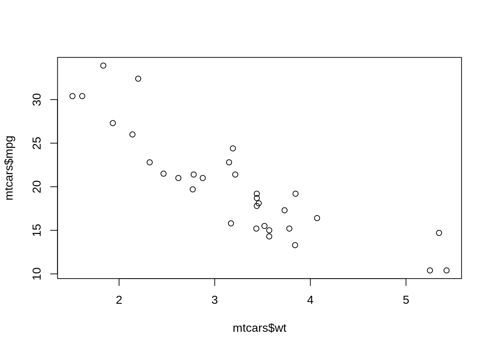

[1] "2026-05-14"2 Start Here: Workflow, Quarto, And RStudio
2.1 Learning Goals
By the end of this chapter, the main goals are:
- open and navigate the course project
- understand the relationship among R, RStudio, Posit Cloud, and Quarto
- run code chunks inside a
.qmdfile - render a Quarto document to HTML
- use source mode, visual mode, and the document outline intentionally
2.2 The Course Workflow
This course uses R for computation, RStudio for the working interface, and Quarto for the documents that combine prose, code, and output. The goal is not only to make individual plots. The goal is to build a reproducible workflow where the text explains the question, the code performs the work, and the output records what happened.
During class, most work will happen inside .qmd files like this one. A Quarto file is a plain-text document that can contain headings, paragraphs, lists, links, code chunks, tables, figures, and notes about interpretation. When Quarto renders the file, it runs the code chunks and combines the results with the surrounding text.
This is different from working only in the console. The console is useful for quick tests, but it does not automatically preserve the reasoning around the command. A Quarto document keeps the analysis in order: what question was being asked, what data were used, what code was run, what output appeared, and what conclusion followed.
2.3 Plain R Scripts
The simplest kind of R source file is a plain R script. A plain R script uses the .R extension and contains only R code. It is useful for setup tasks, repeated checks, helper functions, and other code that does not need surrounding prose or rendered output.
This project includes a few plain R scripts:
install_packages.R
install_extra_packages.R
check_setup.RThe file check_setup.R is a good example. It checks whether the main packages and course data files are available. Opening that file and clicking Source runs the whole script. The result is a quick setup check, not a rendered document.
Use .R scripts when the goal is to run code directly. Use .qmd files when the goal is to combine explanation, code, and output.
2.4 The Console
The console is the fastest place to test a command, inspect an object, or rerun something without rendering a document.
Two console habits are especially helpful:
- the up arrow cycles through recent commands
Ctrl + Rsearches command history in many RStudio setups
The console is not a replacement for a source file. If a command becomes part of the analysis, move it into a .qmd or .R file so it is preserved.
2.5 R, RStudio, Posit Cloud, And Quarto
These tools have different jobs:
- R is the programming language that reads data, transforms it, estimates models, and makes graphics.
- RStudio is the interface where you edit files, run code, inspect objects, view plots, and render documents.
- Posit Cloud is a browser-based version of the RStudio workflow that avoids many local installation problems.
- Quarto is the publishing system that turns
.qmdsource files into HTML, PDF, Word, slides, dashboards, and books.
R Markdown was the predecessor used in earlier versions of this course. Quarto keeps the same basic idea, but it is now the preferred format for this version of the workshop. If you have used .Rmd files before, the transition should feel familiar: a .qmd file still mixes text and code. The main difference is that Quarto uses a more general and consistent document system.
2.6 Project Files And Portable Paths
The examples in this course assume that the project has been opened in RStudio or Posit Cloud. Files are organized inside the project in folders such as Data/, Demos/, and Exercises/.
The data examples use file names like these:
Data/gapminder/gapminder.csv
Data/penguins/penguins.csv
Demos/presentation-demo.qmd
Exercises/04-scatterplot-solution.RAvoid file names that depend on a personal Desktop, Downloads folder, or another location on one person’s computer.
Keeping files inside the project matters because the course should work in Posit Cloud, on another computer, or after being archived for later use.
2.7 The RStudio Layout
RStudio usually has four main panes:
- the source pane, where
.qmdand.Rfiles are edited - the console, where commands can be typed and run directly
- the environment and history pane, where current objects and previous commands are listed
- the files, plots, packages, help, and viewer pane
The exact pane arrangement can be changed under Global Options. The important habit is to know which pane is doing which job. The source pane is for durable work. The console is for quick tests. The environment pane shows what objects currently exist. The viewer pane is often where rendered HTML output appears.
2.8 Source Mode And Visual Mode
RStudio can edit Quarto documents in source mode or visual mode.
Source mode shows the underlying Markdown and code exactly as written. It is the most transparent mode for learning because it makes headings, chunks, chunk options, links, and lists visible.
Visual mode is a more word-processor-like interface. It can be helpful for editing prose, tables, footnotes, and links. It is still editing the same .qmd file, but it hides some of the raw syntax while you write.
Both modes are useful. During this course, source mode is usually the clearest mode for understanding how the document works. Visual mode can be helpful later when revising narrative text.
2.9 Markdown Basics
Quarto uses Markdown for ordinary text formatting. A few patterns cover most needs:
# First-level heading
## Second-level heading
Regular paragraph text.
- a bullet point
- another bullet point
**bold text**
*italic text*
[Quarto website](https://quarto.org)The number of # symbols controls the heading level. Headings also create the document outline, which makes long lessons easier to navigate.
2.10 Code Chunks
An R code chunk starts with three backticks and {r}. A useful chunk also has a short name after r, then ends with three backticks.
In the source file, the opening line would be ```{r ch02-code-chunks-1} and the closing line would be ```. The R code between those lines could be:
1 + 1The code inside the chunk can be run interactively, and it can also be run during rendering. In RStudio, you can run a chunk with the green play button or with keyboard shortcuts. You can insert a new chunk from the menu or by typing the chunk delimiters yourself.
If that chunk runs, the result would be:
[1] 2Chunks can contain more than one line. For example:
x <- 10
y <- 25
x + yThe assignment operator <- stores a value in an object. In the example above, x stores 10 and y stores 25. After those objects exist, R can use them in later commands.
2.12 Chunk Options
Chunk options control how code behaves during rendering. In Quarto, options are often written as special comment lines at the top of the chunk.
This chunk runs but hides the code:
This chunk displays code without running it:
Sys.Date()eval: false is important for examples that require credentials, internet access, private files, or intentional manual action. The code remains visible as a template, but it does not run automatically.
2.13 Rendering
Rendering turns a source .qmd file into an output document. For this course, HTML is the primary output because it is easy to view in a browser and works well for code, figures, tables, and links.
When you render a document, Quarto starts from the top, runs the chunks in order, and inserts the output where it belongs. If a chunk fails, rendering stops. That is useful because it exposes broken code early.
The render button in RStudio is the easiest way to start. Open the file and click Render to create the output document. PDF output is also useful for papers, handouts, and print-ready reports, but it depends on a working TeX installation. HTML will be the most reliable output during the workshop.
2.14 A First Reproducible Example
The built-in mtcars dataset is available in base R, so it is useful for a first test that does not depend on course data files.
head(mtcars)This command creates a simple base R plot:
plot(mtcars$wt, mtcars$mpg)
The plot is not polished, but it confirms that R is running, code chunks are executing, and graphical output appears in the document.
2.15 Reading Output Carefully
A rendered document is not automatically correct just because it renders. Rendering answers one question: did the code run from top to bottom? You still have to ask whether the data are the right data, whether the variables mean what you think they mean, whether missing values were handled correctly, and whether the plot supports the claim being made.
This course will return to that distinction throughout the week. Reproducibility is necessary, but it is not enough. A reproducible mistake is still a mistake.
2.16 Short Exercise
Create a new code chunk below this paragraph. In that chunk:
- store the number
100in an object namedstart_value - store the number
25in an object namedchange_value - subtract
change_valuefromstart_value
# Write your code here.2.17 Extras: RStudio Settings
A few RStudio settings can make workshop work more comfortable:
- turn off restoring
.RDatainto the workspace at startup - set saving the workspace on exit to “Never”
- turn on rainbow parentheses if available
- use the document outline for long
.qmdfiles - choose a source editor font and size that are comfortable for several hours of reading
These settings do not change the analysis, but they reduce friction. The main principle is that the project files should define the work, not a hidden workspace image from a previous session.
2.18 Extras: Output Formats
Quarto can produce many output formats from similar source files:
- HTML documents and books
- PDF reports
- Word documents
- RevealJS slides
- dashboards
- websites
The same analysis can therefore be adapted for different audiences. A rough exploration may become a class exercise. A refined figure may become part of a report. A report may become a short presentation. Quarto is useful because those outputs can remain connected to the same source code and data workflow.
2.18.1 Presentation Demo
Quarto can render slides. A presentation file uses a different YAML header:
---
title: "Presentation Demo"
format:
revealjs:
theme: simple
---The course includes a standalone revealjs demo at Demos/presentation-demo.qmd. The main difference from a book chapter is that second-level headings become slides. Code chunks work the same way, but slides usually hide more code and show more finished output.
## Slide Title
Slide text goes here.2.18.2 Paper Or Report Demo
A paper-style Quarto document emphasizes prose, citations, figures, tables, and cross-references. The course includes Demos/paper-example.qmd and Demos/paper-example.bib. The .bib file stores citation records; the .qmd file cites them with keys such as [@wickham_ggplot2_2016].
A minimal paper-style header looks like this:
---
title: "Paper Demo"
author: "Name"
bibliography: paper-example.bib
format:
html: default
pdf: default
---Paper-style files usually keep more prose visible than slides or dashboards. They also make more use of citations, captions, footnotes, and cross-references.
2.19 What Comes Next
The next chapter begins the data workflow: importing files, inspecting tibbles, reshaping data, and using the core tidyverse verbs that prepare data for visualization.